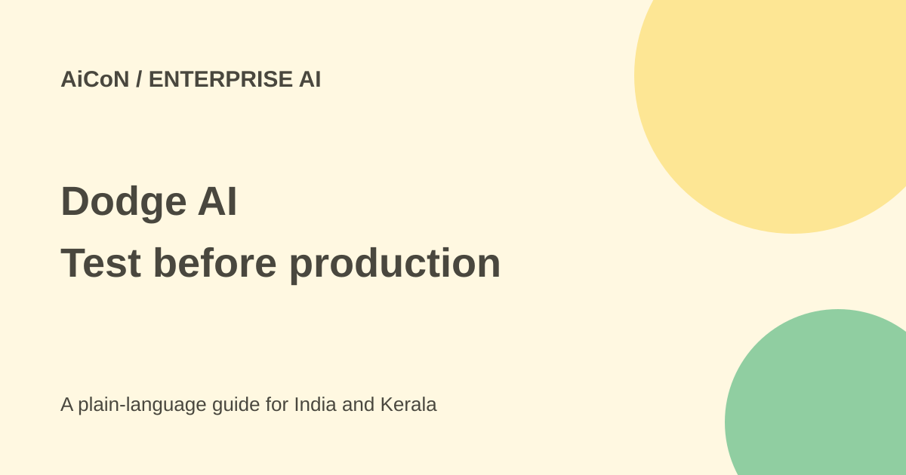

Dodge AI: enterprise IT fixes need tested approval gates
Dodge AI connects enterprise systems to investigate and fix recurring IT problems. It is an organisation-level product, not a free troubleshooting app for a personal laptop.

What does Dodge AI do?
Dodge describes a control plane for enterprise applications. A control plane is a shared place to manage actions across systems rather than a replacement for those systems. The site lists ERP, IT service management, CRM and data platforms. ERP software handles work such as purchasing, inventory and finance; IT service management tracks support tickets and changes.
The current site shows SAP systems, Oracle, Kinaxis, Snowflake and Databricks, with support-tool integrations including Freshdesk, Freshservice and other ticketing tools. It describes four stages: connect context, analyse problems, resolve recurring incidents and prepare controlled enhancements. A logo or broad product category is not proof that your exact version and custom setup are supported.
Access and the free verdict
The route is a business discussion or demo rather than a published consumer signup plan. The checked pages do not establish a public per-user price or a universal free tier. Terms allow trials, pilots and beta features but say these may change and do not carry normal availability guarantees. Ask for a written pilot scope and price, not an assumed free production service.
For an Indian IT team, a quote should explain supported systems, implementation work, usage, ongoing support, taxes, cancellation and any additional software licences. This guide did not request a demo, connect a company account or accept a contract.
How to evaluate a pilot
- Choose one recurring incident with a measurable baseline, such as a failing background job. Record time to diagnose and fix it.
- Ask Dodge to confirm the exact application versions, custom code and ticketing connections it supports.
- Use synthetic or approved test data in a non-production environment. Do not begin with unrestricted production credentials.
- Define the permissions separately: reading logs, proposing a fix, changing code and deploying are different rights.
- Keep a human approval gate for changes. Test rollback and confirm who can stop the workflow.
- Compare the result with the baseline, including failures, manual review time and total cost.
- Ask security and procurement teams to review the data agreement, sub-processors, hosting and current audit evidence before wider access.
Performance numbers are vendor evidence
The site carries customer stories including a 132-fold improvement in a background job and fewer support tickets. These are Dodge's selected testimonials, not independent benchmarks or a forecast for your organisation. Different code, permissions and workloads can produce different results.
The site says actions pass an approval gate. The terms make the customer responsible for its configured approvals, backups, change control and testing before production. If an organisation enables action without review, the terms place responsibility for those settings on it. Marketing reassurance does not replace a tested recovery plan.
Privacy, processing and deletion
The privacy policy says Customer Content is used to provide, secure and support the customer's service. It says content is not used to train models for other customers or third parties without written permission, and AI providers act as sub-processors under contractual limits. That still involves processing by outside providers; it is not an offline-only promise.
Dodge is based in the US and says information may be processed or stored in the US and other countries. Confirm residency and contractual requirements for your own Indian business. The policy describes customer-content deletion or return within 90 days after the agreement ends or a written request, with backup removal within a further 90 days, subject to legal retention.
The vendor says SOC 2 Type I and Type II reports are available under confidentiality terms. This guide did not inspect those reports. A compliance claim is a lead for a security review, not a guarantee that your deployment meets every requirement.
For Kerala enterprise teams
This could fit an organisation maintaining heavily customised enterprise software. A student or small shop needing ordinary computer help probably needs a simpler route. Start with a small test problem and retain local staff who understand the business process.
What changed since the original post?
The 30 September post focused on funding and self-healing. This guide puts more weight on current product scope, permission settings, vendor-only performance evidence and the customer's duty to test changes before deployment.
Frequently asked questions
Is there a confirmed free plan?
Not on the checked public pages. Obtain written pilot terms.
Can it replace all IT review?
No. Changes still need testing, approvals and recovery plans.
Does no training mean no third-party processing?
No. The policy describes AI and cloud sub-processors.
Was enterprise access granted here?
No. Only public sources were read.
Sources: Product and customer claims · Privacy, retention and processing · Approval and test responsibilities. Checked 7 October 2026.